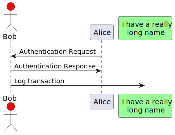

Tài Liệu Yêu Cầu
Giới Thiệu
Tóm tắt ngắn gọn về dự án và mục đích của tài liệu.
Tài Liệu Các Yêu Cầu Người Dùng
- Mô tả: Các yêu cầu chính từ góc độ người dùng.
- Tính năng chính: Các chức năng quan trọng mà hệ thống cần phải cung cấp.
- Kịch bản sử dụng: Các tình huống sử dụng chính của hệ thống.
Yêu Cầu Kỹ Thuật
- Yêu cầu hệ thống: Cấu hình phần cứng và phần mềm.
- Tương tác với hệ thống khác: Các hệ thống hoặc dịch vụ bên ngoài mà hệ thống sẽ tương tác.
Yêu Cầu Chất Lượng
- Hiệu suất: Các yêu cầu về tốc độ và hiệu suất.
- Bảo mật: Các yêu cầu về bảo mật và quyền truy cập.
Kế Hoạch Kiểm Thử
- Chiến lược kiểm thử: Các loại kiểm thử sẽ được thực hiện.
- Tiêu chí chấp nhận: Các tiêu chí mà hệ thống phải đáp ứng để được chấp nhận.
Thiết kế hệ thống
